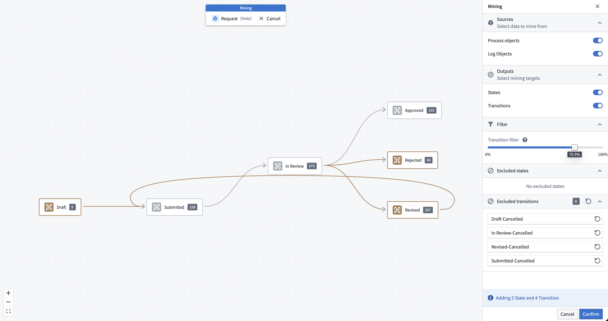

There are several ways to create a model of a process using the Machinery application: you can define a process manually by drawing states and transitions, or you can derive a process model automatically from historical observations by process mining.
Process mining is supported as a dedicated mode in Machinery. The process mining workflow is accessible through the main toolbar once a data connection has been configured.

In mining mode, you will see your existing process definition overlaid with states and transitions as they occur in the data. The styling indicates the following:
At the top of the mining side panel, you can configure which data source should be used for mining: process objects, log objects, or both. While it is possible to mine only the latest state values from the process object type, a log object type is recommended.
In addition, you can select what elements should be mined: states, transitions, or both. Typically, you should mine both states and transitions if the relevant datasources are available.
Collected data often contains noise and errors. The raw output from mining can be too complex or contain unexpected results. Machinery allows you to filter states and transitions from the data to help you produce a more usable representation of your process.

At the bottom of the mining side panel, you can configure filters.